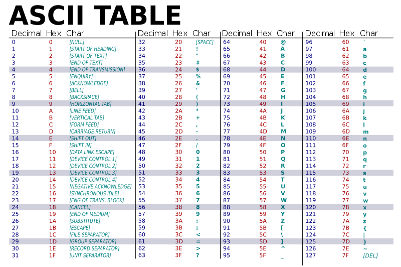
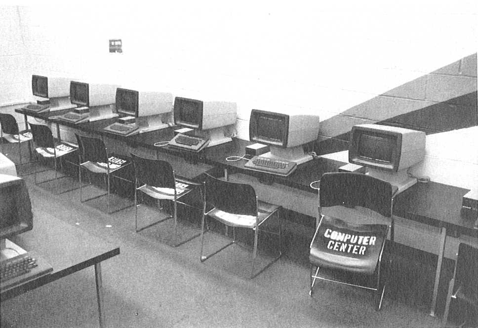

2. What is a Terminal and why do we still use them?#
2.1. The origin story#

{kind=link}
Originally when we started building computers they were very large. The main component, illustrated above, was a device which housed the “smart” parts, the CPU and MEMORY, that could run programs. We will discuss these parts and how they work in progressively more detail as the book goes along.

{kind=link}
For a human to work with the computer we had to attach a device that could both display output from the software running on the computer and accept input. The basic design was a terminal device that contained a video screen, keyboard and just enough smarts to communicate with the computer.
FYI
As we see, computers originally did not have integrated hardware for humans to use – eg. they did not have integrated screens, keyboards, mice, track pads, VR goggles, etc. Such human computer interface devices only arose with the advent of small personal computers (PC’s) designed and built largely for direct human use. That being said, there are still many computers today that do not have or need integrated human interface devices. These include the computers that power the Cloud or are integrated into other devices such as your WiFi router.
2.1.1. ASCII#

{kind=link}
In particular, ASCII terminals know how to translate ASCII encoded text data to display, eg. “print”, the appropriate character on the screen. For example, if the software running on the computer sent the number 65 to the terminal, the terminal would display capital ‘A’ at the current “cursor” position. The terminal would also advance the cursor to the right so that the next encoded character sent would appear to the right of the last.
ASCII includes various values that encode punctuation, including the critical space character to separate words. The ASCII code also includes values that move the cursor so that the software can control where on the screen characters would appear. Perhaps the most important of these is the line feed (‘\n’) value as it causes the cursor to go down one row to begin a new line.
In addition to the screen terminals had a keyboard. These were built so that when a key was pressed on the keyboard, the terminal would send the corresponding ASCII value to the computer. Each key is labeled with the ASCII symbol of the value that pressing it sends. This way, software running on the computer could take text input from the user in addition to displaying it. Furthermore, it was easy to have the software break the input into “words” and “lines” by having it scan for the ASCII values for space and line-feed, sent when the spacebar and return (or enter) keys were pressed.
History
Terminals were the “natural” evolution of the classic typewriter. Its screen was like a virtual piece of paper that could be software controlled. As a matter of fact, IBM was selling typewriters in 1924 well before it started exploring computers in 1940 IBM History.

{kind=link}
An operating system like Unix was run on the computer and allowed many terminals to be connected to the computer. A user with an account on the computer could use the terminal and login to the computer. Students who needed to use the computer would have to go to a “terminal room” to physically “connect” to the computer.

Specifically, they would login with a username and password.
 The Unix operating systems would check to see that the user was authorized and if so, start a new terminal/shell session for them. In particular, it started an instance of an ASCII oriented program called the shell which would allow the user to start working in the Unix development environment – running existing programs and writing new ones (see section Shell for more details).
The Unix operating systems would check to see that the user was authorized and if so, start a new terminal/shell session for them. In particular, it started an instance of an ASCII oriented program called the shell which would allow the user to start working in the Unix development environment – running existing programs and writing new ones (see section Shell for more details).
2.2. Terminal Emulators#
While the computers and terminals that we discussed above are relics of the past, Unix and its development environment is still alive and thriving. It turns out that the simplicity of an ASCII terminal and the ASCII oriented programming tools of Unix continue to power much of the digital world around us. Linux and other versions of Unix run on every imaginable device today, all the way from supercomputers to watches. And at some point or another, a programmer used terminal sessions communicating with the Unix running on those devices to develop and debug layers of software. While most people never see these layers of software, we rely on them to make those devices useful.
Concept
As we learn more about how software is constructed and how computers work, we will learn that the power of Unix comes from making it very natural and easy for programmers to construct programs that can themselves be used to process and translate code.
Today we use “software” versions of terminals, called terminal emulators, to allow us to create connections to an operating system either running on the physical machine we are on or to other remote computers. Apple’s MacOSX is a Unix derived operating system and includes a program called Terminal. Microsoft’s Windows OS is not a Unix operating system but includes a similar program called Windows Terminal. Unlike the old days, since there is really no physical terminal device, a single user can start as many terminal sessions as they want, each within its own window. As we will see later it is very useful to use multiple terminal sessions to organize your work. Additionally, both OSX and Windows provides a program called SSH. SSH allows you to use a terminal emulator running on your computer to connect to remote computers. Doing so is like connecting a terminal device to the remote computers you are using. The following discusses using SSH on windows Windows Terminal SSH and this one on using SSH on OS OSX Terminal SSH.
Recently, terminal emulators such as xterm.js have been developed that can be run within a web-browser. This allows us to develop web accessible development environments in which a user can create and use terminals all within a web browser running on their local computer. This book has been written using Books with Jupyter which exploits Project Jupyter. As part of this book we have setup online accessible Jupyter services that provide access to the same UNIX environment used to author the content. This means while reading this book you can access a compatible UNIX terminal environment form your web browser.
Following the steps in the “How to read this book” chapter you can launch a UNIX environment via a Jupyter notebook server and then create terminals to explore the material. The Jupyter notebook server is a private Linux server (more accurately an Intel Linux Container) for your personal use. This environment allows you to create terminal sessions so that you can directly use the Unix development tools installed on the computer via the xterm.js terminal emulators. This gives you the freedom to explore all the topics and material from within your web browser. But please note there is nothing special about these terminals or the Linux system. Anything you learn can be directly applied to any Unix-like system that you can establish a terminal connection to.
Danger
Please note if you use the associated online UNIX environment, the files you create within your Linux server are NOT PERMANENT! In other words, you cannot rely on the files to be there the next time you access the server. If you want to save your work you will need to use an external service like GIT.
You are encouraged to always have a terminal open when you read this book so you can follow along and try things out.
History and Concept
Life before the Terminal and the Revolution
It might not seem obvious, but the invention of the terminal was a very big deal in democratizing computer use and programming. If you are interested you can find more information about pre-terminal times here:
Computer programming in the punched card era, https://en.wikipedia.org/w/index.php?title=Computer_programming_in_the_punched_card_era&oldid=1031619768 (last visited Aug. 5, 2021).
Keypunch, https://en.wikipedia.org/w/index.php?title=Keypunch&oldid=1035986902 (last visited Aug. 5, 2021).
Punched card input/output, https://en.wikipedia.org/w/index.php?title=Punched_card_input/output&oldid=1029169887 (last visited Aug. 5, 2021).
IBM 1403, https://en.wikipedia.org/w/index.php?title=IBM_1403&oldid=1028926171 (last visited Aug. 5, 2021).
Prior to the terminal, working with computers was more like offering prayers, written on stacks of special paper cards, to a priest who took them on your behalf to computer operators who then fed them to the computer. If all went well, you would be able to pick up the output of the computer program you requested to have run, in the form of a large paper print out. Not only were there many physical devices and steps in the process, but it also took a very very long time between steps. In some sense using a computer required humans to adapt to the machine’s needs. Furthermore, only a few trusted people were allowed to have access to the actual computer. Writing new programs was an even more arcane skill that required incredible patience and discipline to work primarily on paper.
Terminals changed all of this. All of a sudden many users could gain “direct” access to programs running on a computer in a fast, interactive way. Using a computer became more like having a conversation with the programs, including the programs for writing new programs. This meant users could explore, experiment, and learn how to write new programs themselves! One should never overlook the power of having a good human interface.
FYI
Want to have some fun? Believe it or not, we used to develop and play games on ASCII terminals. If you want to get an idea what cost some people their degrees, or in some case got them their degrees, checkout Adventure, Rogue, Nethack, and Moria. We have included a version of Moria in the software of this book. To try it, use the command /usr/games/moria within a terminal.
2.3. Exercises#
2.3.1. A terminal provides a text oriented way for a human to interact with a computer (T/F)#
Think about your answer and then click note for the correct answer
Note
True. A terminal allows software running on a computer to display ASCII encoded text data to a human and similarly allows a human to send ASCII encoded text to the computer for processing by software.
2.3.2. What would be displayed on an ASCII terminal if the following byte values were sent to it (note the byte values are given in hexademical notation)? 0x48 0x65 0x6c 0x6c 0x6f 0x20 0x57 0x6f 0x72 0x6c 0x64 0x21#
Think about your answer and then click note for the correct answer
Note
An ASCII terminal will translate each byte value displaying the following on its screen:
Hello World
2.3.3. If the following keys where pressed on the keyboard of an ASCII terminal (in order from left to right), which byte values would be sent to the computer? Values should be given in hexadecimal notation. Nice :-)#
Think about your answer and then click note for the correct answer
Note
0x4e 0x69 0x63 0x65 0x20 0x3a 0x2d 0x29